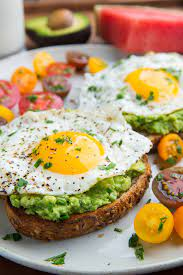

Perfect Breakfast

Description
What's the perfect breakfast? A delicious combination of unique favors my mom put together by accident! I hope others will enjoy it as much as we do.
Ingredients
- 2 teaspoons butter
- 2 eggs
- 1 slice sourdough bread,toasted
- Dijon mustard
- ½ avocado - peeled, pitted, and sliced
- 2 tablespoons grated Parmesan cheese, or more to taste
Steps
- Melt Butter in a skillet.
- Cook eggs.
- Spread Dijon mustard on bread.
- arrange avocadoand eggs on bread.
- Springle with parseman cheese.